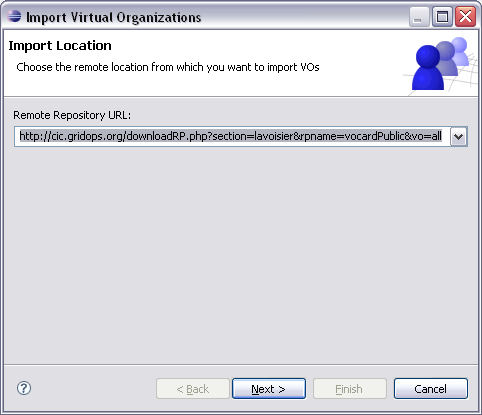
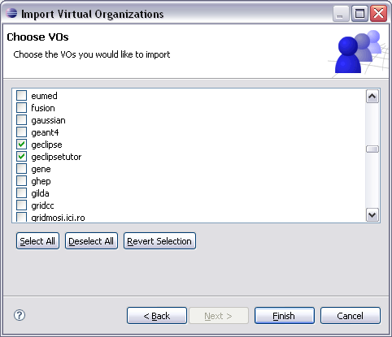

The most important g-Eclipse preference is the declaration of at least one valid Virtual Organization (in short, VO). In terms of the Grid, a VO is
[...] a group of individuals or institutions who share the computing resources of a "grid" for a common goal
Within g-Eclipse, VOs are used as the central access point to the user's personalized Grid. VOs are therefore specific for a certain grid middleware. In general, a VO implementation requires at least a contact string for contacting a specific information service. This service is later used by g-Eclipse to query the Grid - or, to be more precise, the underlying middleware - for available resources such as computing elements, storage elements and other services.
As not all currently available middlewares support the concept of Virtual Organizations, g-Eclipse comes with a 'Generic VO' implementation that is simply a named but empty resource container. This generic VO may also be used as a base class for developers to define their own VO.
You can use the
 g-Eclipse > VO-Declarations preference page to declare a new
Virtual Organization. There, you can click Add... to start the
VO Wizard. If you have installed g-Eclipse with a middleware extension,
the VO Wizard may show up a first page that let you choose the
type of the VO you want to create:
g-Eclipse > VO-Declarations preference page to declare a new
Virtual Organization. There, you can click Add... to start the
VO Wizard. If you have installed g-Eclipse with a middleware extension,
the VO Wizard may show up a first page that let you choose the
type of the VO you want to create:

For the setup of a middleware specific VO, please see the corresponding help pages of the middleware. If no middleware extension is available, the VO Wizard will directly switch to the wizard page for setting up a generic VO:

All you have to do here is to enter a name for your generic VO and to press Finish. The newly create VO will then be shown in the VO preference page.
Declaring a VO by hand is sometimes not very easy since the necessary parameters are most often not easily accessible especially for new users. Therefore g-Eclipse provides mechanism for importing VOs from a repository. If such a functionality is available stringly depends on the middleware. Currently g-Eclipse does only provide an importer for VOMS VOs.
To import a VO go to the
g-Eclipse > VO-Declarations preference page and click
Import... to start the VO Import Wizard. If there are more
than one VO importer installed a first wizard page will give you the chance
to select the used importer. If there is only the VOMS VO importer installed
the wizard will directly switch to the second page that let you specify
a repository location from which to import VO settings. Most likely this
location will be preselected by the importer by may be changed to another
location:

After specifying the repository location and clicking Next the wizard will query the specified location for available VOs. If this query is successful the next wizard page will show a list of VOs that are available for import:

Within this page you have the possibility to select the VOs you would like to import. After doing so and after clicking Finish the selected VOs will be imported and will be afterwards available in the VO preference page.
IMPORTANT!!!
Importing VOs may fail or may result in wrong VO values. This is not a problem
with g-Eclipse but with the information provided from the repositories. Most
often it is the VO administrators responsibility to maintain the information
contained in these repositories. So if you find that the information for your
VO is invalid please contact your VO administrator and ask him to correct the
information in the corresponding repository. In any case you should carefully
check the information of your newly imported VOs.
To edit the settings of a VO open the
g-Eclipse > VO-Declarations preference page. Select the VO
you would like to edit and click Edit.... Now the
VO Wizard shows up and automatically switches to the wizard
page where you may edit the settings of the selected VO. Note that you can
change any setting except the VO's name. After performing your changes, click
Finish and your new VO settings will be saved.
To start editing a VO you can also simply double-click the VO in the list of all currently available VOs.
g-Eclipse > VO-Declarations preference page. Select the
VO you want to delete. You may also select multiple VOs that will
be deleted in a single operation. Click Remove and the
selected VO(s) will be deleted from the list of declared VOs.